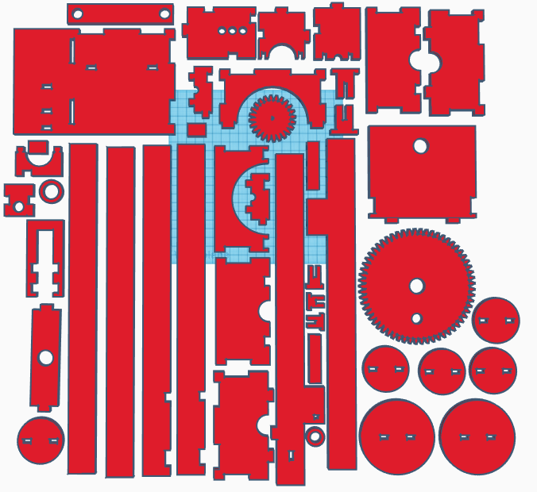

In the spring of 2020 as Covid-19 was rapidly spreading across the globe, APL set aside some research dollars and issued a series of challenges to staff to help provide clever engineering to help the nation respond to the emerging healthcare crisis. One effort was to come up with cheap and mass-produceable ways to build emergency ventilators. I participated in an effort to explore whether acrylic pneumatics could serve as a viable emergency stopgap in lieu of better equipment. While our effort ultimately did not produce a viable low cost ventilator, I was able to make some pretty cool mechanical systems made entirely out of laser cut acrylic (even down to laser cut, snap-together axles).
The pump is designed to be built out of components all cut from a single quarter inch acrylic sheet. No connective hardware is needed (screws, bolts, etc.). Instead, the pump is designed with snap fits between all of the pieces so that it can be assembled without any tools needed. The axles for the gears are made by snapping together two pi shaped pieces.
